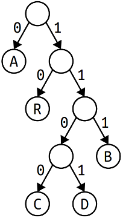
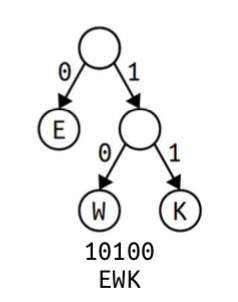
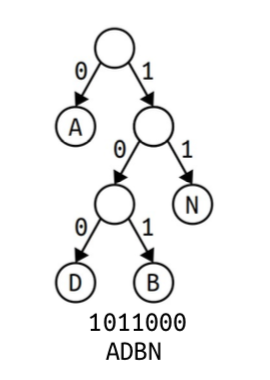
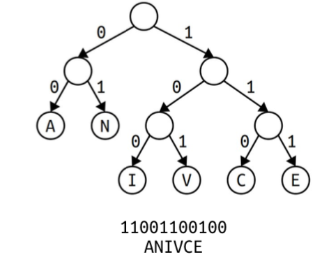
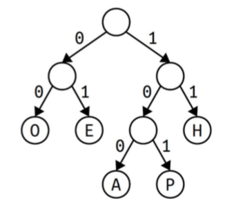

Due Friday, March 11 at 10:30 am
- Submissions received by the due date receive a small on-time bonus.
- All students are granted a pre-approved extension or "grace period" of 24 hours after the due date. Late submissions are accepted during the grace period with no penalty.
- The grace period expires Sat, Mar 12 at 10:30 am, after which we cannot accept further late submissions.
- All due dates and submission times are expressed in Pacific time.
You are permitted to work on this assignment in pairs.
Your final assignment of the quarter is to write a program that uses Huffman coding to compress and decompress files. It pulls together ideas from all over the quarter – recursive exploration, linked structures, trees, and streaming algorithms. Once you’ve finished coding this one up, you’ll have a fairly impressive piece of software that’s powered by a bunch of clever algorithms. We hope this is a fitting capstone to your experience in CS106B!
Here’s our recommended timetable for completing this assignment:
- Aim to complete Part One on Monday.
- Aim to complete Part Two on Tuesday.
- Aim to complete Part Three on Wednesday.
- Aim to complete Part Four on Thursday.
- Bask in the glory of having completed the last assignment of the quarter, and explore Part Five on Thursday to appreciate the program you’ve just written.
Assignment Logistics
Starter Files
We provide a ZIP of the starter project. Download the zip, extract the files, and double-click the .pro file to open the project in Qt Creator.
Resources
Check out our Guide to Huffman Coding for more information about how the Huffman coding algorithm works.
Getting Help
Keep an eye on the Ed forum for an announcement of the Assignment 9 YEAH (YEAH = Your Early Assignment Help) group session where our veteran section leaders will answer your questions and share pro tips. We know it can be daunting to sit down and break the barrier of starting on a substantial programming assignment – come to YEAH for advice and confidence to get you on your way!
We also here to help if you get run into issues along the way! The Ed forum is open 24/7 for general discussion about the assignment, lecture topics, the C++ language, using Qt, and more. Always start by searching first to see if your question has already been asked and answered before making a new post.
To troubleshoot a problem with your specific code, your best bet is to bring it to the LaIR helper hours or office hours.
Part One: Build the Huffman Tree
In this first milestone, you’ll implement this function:
EncodingTreeNode* huffmanTreeFor(const string& str);
This function takes as input a piece of text, then builds a Huffman coding tree for that text using the algorithm from class. (It’s the one that makes a priority queue of a bunch of singleton nodes, then repeatedly combines nodes together.)
Before you code this up, take a minute to make sure you understand how Huffman coding works.
Edit the file ShortAnswers.txt with your answer to the following question:
Q1. Draw the Huffman coding tree that would be produced for the input string "aabbbbccc" by following the algorithm from class. One specific note: when merging trees together, structure your tree so that the first node removed from the priority queue becomes the 0 child of the tree and the second node removed from the priority queue becomes the 1 child of the tree.
Now, back to C++. The result of huffmanTreeFor is a EncodingTreeNode* object, where EncodingTreeNode is defined as follows:
struct EncodingTreeNode {
char ch; // Which character is stored here.
EncodingTreeNode* zero; // Child tree labeled 0.
EncodingTreeNode* one; // Child tree labeled 1.
};
The ch variable here is only meaningful if the EncodingTreeNode is a leaf node in the tree (do you see why?), so you should not read or write this variable in a EncodingTreeNode unless that node is a leaf.
In the course of coding up this part of the assignment, you’ll need to use a priority queue. You built one of these in Assignment 6, but that HeapPQueue type was specifically designed to work with DataPoint objects. We’ve provided the "priorityqueue.h" header file, which defines a PriorityQueue<T> template that can store objects of any type. Consult the Stanford C++ Library Documentation for more information about how to use this type. In particular, make sure you know how to enqueue and dequeue elements and how to determine the priorities of relevant items.
One little nuance that you’ll need to be aware of: the test cases in the starter files we’ve provided all assume that, when you’re running the Huffman tree construction algorithm, the first node you pull out of the queue will end up as the 0 child of the newly-constructed node, and the second node you pull out of the queue will end up as the 1 child. Make sure to follow this convention in this assignment.
To summarize, here’s what you need to do:
- Implement the
huffmanTreeForfunction in Huffman.cpp. - Add at least one custom test case for this function, and test your code thoroughly.
Our test coverage here is not as robust as in the previous assignments. You will need to test your code thoroughly. A recommendation: write a test case that creates a Huffman tree from a string of your choosing, then set a breakpoint and run the tests with the debugger on. Using the same techniques from Assignment 8 that you used to map out and escape the labyrinth, poke around in the debugger and draw out the trees that you’re producing. Do they match what you expected to find? If so, great! If not, step through your construction algorithm in the debugger and see what happens.
Some notes on this problem:
-
Do not edit the
EncodingTreeNodetype when solving this problem. (More generally, don’t edit this type at any point in the assignment.) -
The tree construction algorithm we provided in class assumes that the input string has at least two different characters in it, and if this isn’t the case, your code should call the
error()function to report an error. (Do you see why the algorithm doesn’t work in these cases?) -
If multiple characters are tied for having the same weight, or if two or more intermediate trees are tied for having the same weight, you can break ties arbitrarily. Keep in mind that there can be many equally good Huffman trees for a given string, differing only in how the algorithm broke ties. As a result, if you’re writing custom test cases, make sure that your tests don’t assume anything about the specific way that the algorithm breaks ties when they arise.
-
You should completely ignore the
chfield ofEncodingTreeNodefor all nodes except leaves, the same way that you completely ignored the value field of theLinearProbingHashTable::Slottype when the type field was set toSlotType::EMPTY. -
You should be able to handle strings made of any characters, not just letters, numbers, etc. In particular, you can’t reserve certain char values to mean “this is an internal node.” Many files on disk – especially files containing non-text data – make use of all possible characters.
Part Two: Implement Text Encoding and Decoding
Your next task is to write a pair of functions that are inverses of one another:
string decodeText(Queue<Bit>& bits, EncodingTreeNode* tree);
Queue<Bit> encodeText(const string& str, EncodingTreeNode* tree);
This decodeText function takes as input a Queue<Bit> representing some data that’s been compressed, along with a pointer to the encoding tree that was used, then returns the decompressed string. The encodeText function takes as input a string and an encoding tree, then returns a Queue<Bit> loaded with the bits formed by encoding that string using that tree.
Before you code this up, though, take a minute to make sure you know how to run the algorithms with a pencil and paper.
Edit the file ShortAnswers.txt with your answer to the following questions.
Q2. Decode the string of bits 1100010011000100 using the encoding tree shown below:

Q3. Encode the string ABRACADABRA using the encoding tree from Q2.
Returning to C++ Land, you’ll notice that these functions make reference to a Bit type, which represents a single bit. The Bit type works like a regular integer, though note that if you try assigning a value to a bit that isn’t a 0 or a 1 it’ll report an error. For example:
Bit b = 0;
queue.enqueue(0);
if (queue.dequeue() == 1) { ... }
You can’t perform arithmetic on Bits. But that’s a good thing, because there’s no reason you should need to do that in this assignment. 😃
To summarize, here’s what you need to do:
- Add a custom test case for the
decodeTextfunction inHuffman.cpp. - Implement the
decodeTextfunction and test thoroughly. - Add a custom test case for the
encodeTextfunction. - Implement
encodeTextand test thoroughly.
Some notes on this problem:
-
You’re given the input
Queueby reference indecodeText, and your code can modify thatQueuehowever it feels like. The queue can end up empty, or could contain the original bits, or could contain whatever sequence of 0s and 1s that you’d like. -
In our initial examples of encoding and decoding text in lecture, we had access to an explicit table that represented the bit patterns associated with each character. It is significantly easier to implement the
encodeTextfunction if you build a table like this before writing out the characters. However, having a table like that isn’t necessary for thedecodeTextfunction – do you see why? -
You can assume that the input tree is not null and doesn’t consist of just a single node. (These are the two degenerate cases that we said you didn’t need to handle in
huffmanTreeFor.) -
The tree given to
encodeTextanddecodeTextwill always contain leaves holding all the characters that appear in the input string or input queue of bits (respectively), but may also contain other characters. The input tree does not necessarily have to be the optimal Huffman coding tree. -
You can assume that the bits provided to
decodeTextform the correct encoding of a piece of text that was encoded using the same encoding tree that was provided to you. However, you should be careful about how you use this assumption. Specifically, if there’s a bug in yourencodeText, then you may end up passing invalid bits intodecodeText– oops! – and so we recommend making yourdecodeTextfunction as “bulletproof” as possible by detecting and handling errors as you find them. -
In C++ there is a difference between the numbers
0and1and the characters'0'and'1'. Be careful not to write something likeBit zero = '0'; // Error! Bit one = '1'; // Error!since this attempts to take the ASCII codes for
'0'and'1'(namely, 48 and 49) as values for bits. Instead, use the numbers themselves:Bit zero = 0; // Beautiful! Bit one = 1; // Pulchritudinous!
Part Three: Implement Tree Encoding and Decoding
One of the practical concerns of Huffman coding that we discussed in class is that if you do choose to use Huffman coding, you need to somehow store information about which encoding tree you used. That way, whoever is decoding the information knows which codes corresponding to which characters. This means that we’ll need to devise a pair of functions that allow you to take a tree and encode it in a way that can be stored on disk, plus a way to decode the encoded representation back into the tree.
There are many ways to do this, but one of the most space-efficient ways is the following. We’ll encode each tree as a pair of a Queue<Bit> representing the shape of the tree and a Queue<char> representing which characters are in the leaves of the tree. The shape of the tree is encoded as follows:
- If the tree is a single leaf node, it’s represented by the bit 0.
- If the tree is not a leaf node, it’s represented by a 1 bit, followed by the encoding of its zero (left) subtree, followed by the encoding of its one (right) subtree.
The Queue<char> representing which characters are stored in the leaves of the tree is found by reading the leaves in the pattern you’d get by doing an inorder traversal of the tree. For example, here are several Huffman trees and how they’d be represented as a sequence of bits and a sequence of characters:



This is an extremely compact way of writing out a tree: the tree itself is written out with one bit per node, and the contents of the leaves are written out as-is. Most importantly, it’s possible to reverse the encoding back into a tree. Before writing code to compute or process these sequences, grab a pencil and paper and make sure you’re comfortable with how these work.
Edit the file ShortAnswers.txt with your answers to the following questions.
Q4. Write out the Queue<Bit> and Queue<char> associated with this encoding tree:

Q5. Decode this Queue<Bit> and Queue<char> into an encoding tree and draw the result:
111000100
MDCLV
Your task in this part of the assignment is to write a pair of functions
void encodeTree(EncodingTreeNode* tree, Queue<Bit>& bits, Queue<char>& leaves);
EncodingTreeNode* decodeTree(Queue<Bit>& bits, Queue<char>& leaves);
This first function takes a tree and produces the two Queues shown above. The second function takes in the two Queues and reconstructs the tree they represent.
Specifically, you should do the following:
- Implement the
encodeTreeanddecodeTreefunctions inHuffman.cpp. - Add at least two custom test cases, one for each function, and test your code thoroughly.
Some notes on this problem:
-
There are no requirements about what the
Queue<Bit>orQueue<char>should contain afterdecodeTreefinishes running. They could be unchanged, or completely empty, or filled with whatever contents you’d like. -
You can assume the inputs to
decodeTreeare correct, in that the bits and characters are a correct representation of some encoding tree, that there aren’t stray bits in the queue, that you have the exact correct number of characters that you need, etc. However, as withencodeTextanddecodeText, a bug in your implementation ofencodeTreemay manifest as errors indecodeTree, so we recommend making yourdecodeTreefunction “robust” and able to identify and flag errors if it finds them. -
You can assume the tree provided as input to
encodeTreeis a valid coding tree – each internal node will have exactly two children, only the characters in the leaves matter, each character appears in at most one leaf, etc. -
You can assume the input
Queue<Bit>andQueue<char>toencodeTreeare empty when that function is first called. -
You don’t need to worry about the edge cases that came up in the first milestone. You can assume the tree exists and contains at least two leaves.
Part Four: Put It All Together
You now have all the pieces you need to build the final Huffman encoder and decoder. Implement the following pair of functions:
HuffmanResult compress(const string& text);
string decompress(HuffmanResult& file);
This first function takes as input a string of text and produces a HuffmanResult containing all the information necessary to store the compressed contents of that string to disk. The second function takes as input a compressed HuffmanResult and returns the string that it encodes. Here, the HuffmanResult type represents a combination of the encoded tree and the encoded text:
struct HuffmanResult {
/* Encoded version of the Huffman tree. */
Queue<Bit> treeBits;
Queue<char> treeLeaves;
/* Encoded version of the message. */
Queue<Bit> messageBits;
};
This section should mostly consist of putting together the different pieces you wrote earlier in the right order. In doing so, you may discover that there were some bugs lurking in your implementation, which you’ll need to then correct to get everything working. (It’s common in software engineering to find that each individual piece of a program passes its tests independently but fails when things come together; it’s usually either due to tests not covering every possible case or to some unexpected interactions between the components). When that happens, use the debugger to isolate where the issue is. Did you build the encoding tree incorrectly? Did you encode the message bits wrong, or is the issue in the decoder?
To summarize, here’s what you need to do:
- Implement the
compressanddecompressfunctions inHuffman.cpp. - Add at least one custom test case to ensure that your code works. Take this step seriously – writing good tests here will help you identify and smoke out errors that might be lurking in your code.
Testing is key here! We have not provided enough tests with the starter files to poke and prod these functions in all the ways they can be poked and prodded, and you should not consider your implementation to be ready until you’ve written some tests of your own and used the interactive “Compress a File” and “Decompress a File” options to confirm that your code works end-to-end.
Some notes on this part of the assignment:
-
Your implementation should call
error()if the input string to compress doesn’t have at least two distinct characters in it. -
You can assume that the input to
decompress()is a valid compressed file and don’t need to worry about what happens if this isn’t the case. Then again, making this function as robust as possible is a great idea during testing. -
Our provided starter files contain logic to take a
HuffmanResultand save it to disk and to take aHuffmanResultand load it from disk. The internal logic of how this works is more of a CS107-level topic that involves manipulating individual bits of variables, which is beyond the scope of what we’re going to cover in CS106B. However, if you’re curious to see how this works, you’re welcome to check outDemos/HuffmanResult.cppto learn more! -
Make sure not to leak any memory in your implementations.
-
There are no requirements about what the final contents of the
HuffmanResultmay be after calling decompress. You can leave it unchanged, empty it out, etc.
Part Five: Enjoy Your Creation!
Congratulations! You’ve just built a compression and decompression algorithm! All that’s left to do now is to try it out on a few examples to see how well it does.
We’ve bundled a number of sample files with the assignment, some already compressed (they have the suffix .huff) and some not yet compressed. Use your program to decompress the compressed files to see what they contain, and then try compressing some of the sample files so that you can see how well those files compress!
Try decompressing the file samples/Congratulations.bmp.huff. That file will expand out to one named Congratulations.bmp, which you should definitely take a look at once you’ve finished the assignment. The same is true for the file samples/Woohoo!.mp4.huff. 😃
There are no deliverables for this section. Just play around and see what you find!
(Optional) Part Six: Extensions!
If you enjoyed this assignment and want to run further with it, we’d love to see what you come up with! Here are a few suggestions to help you get started.
-
Compute Shannon entropy. The Shannon entropy of a piece of text is, intuitively, how "surprised" you should be when you see a character. It gives a way of quantifying the information content of the text, under the assumption that each character is chosen independently of all the others around it. Read up online on the definition of Shannon entropy, then write some code to compute the Shannon entropy of the input text.
In a sense, the Shannon entropy is the theoretical lower bound on the number of bits required for an "average" character in the text. Specifically, if your text is $n$ characters long and has Shannon entropy $H$, then any compression scheme based on prefix codes must use at least $nH$ bits. Compare how many bits are actually generated by Huffman coding against the theoretical minimum predicted by Shannon entropy. What do you find?
-
Implement a more advanced compression algorithm. Huffman coding is a good compression algorithm, but there are better alternatives in many cases. Many modern compression algorithms are based on an algorithm called LZW, named after the initials of its inventors. Other topics to look up include move-to-front coding, run-length encoding, and the Burrows-Wheeler transform.
Submission Instructions
Before you call it done, run through our submit checklist to be sure all your ts are crossed and is are dotted. Make sure your code follows our style guide. Then upload your completed files to Paperless for grading.
Partner Submissions:
- If you forget to list your partner you can resubmit to add one
- Either person can list the other, and the submissions (both past and future) will be combined
- Partners are listed per-assignment
- You can't change/remove a partner on an individual submission
Please submit only the files you edited; for this assignment, these files will be:
ShortAnswers.txtHuffman.cpp
You don't need to submit any of the other files in the project folder.
If you modified any other files that you modified in the course of coding up your solutions, submit those as well. And that’s it! You’re done!
Good luck, and have fun!
Congratulations on finishing the last assignment of the quarter!
We’re extremely impressed with how much progress you’ve made since the start of the quarter. Best of luck going forward!